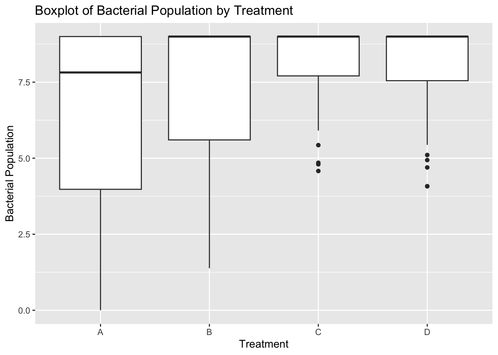

The following objects are masked from 'package:stats':
filter, lag
The following objects are masked from 'package:base':
intersect, setdiff, setequal, union
library(purrr)library(lubridate)
Attaching package: 'lubridate'
The following objects are masked from 'package:base':
date, intersect, setdiff, union
library(ggplot2)library(here)
here() starts at /Users/XylemHu/Desktop/EPID8060E/GitHub/xueyanhu-MADA-portfolio
library(stringr)library(tidyr)library(tibble)
I am trying to create a synthetic dataset which mimic the result that I have got from my research, whose real data will be used for my project assessment.
create synthetic dataset
# Set seed for reproducibilityset.seed(123)# Number of observationsn_observations <-160# Seed types: AL and FEseed_types <-rep(c("AL", "FE"), each = n_observations /2)# Strain types: F and Gstrain_types <-rep(c("F", "G"), each = n_observations /2)# Replications: 1 and 2replications <-rep(c("1", "2"), times = n_observations /2)# Treatment groups: A, B, C, Dtreatments <-rep(c("A", "B", "C", "D"), each = n_observations /4)# Observed days: 0, 1, 3, 5, 7days <-rep(c(0, 1, 3, 5, 7), times = n_observations /5)# Bacterial population with correlation to treatmentbacterial_population <- days +rnorm(n_observations, mean =ifelse(treatments =="A", 2, ifelse(treatments =="B", 5, ifelse(treatments %in%c("C", "D"), 6, 0))),sd =2)# Ensure the bacterial population is non-negativebacterial_population <-pmax(bacterial_population, 0)# Ensure the bacterial population fluctuates with a peak on day 3 or 5bacterial_population <-ifelse(days %in%c(3,5), bacterial_population +rnorm(n_observations, mean =5, sd =1), bacterial_population)# Ensure the bacterial population is within the range of 0 to 9bacterial_population <-pmin(bacterial_population, 9)# Create a data framebacterial_data <-tibble(Seed_Type = seed_types,Strain_Type = strain_types,Treatment = treatments,Day = days,Replication = replications,Bacterial_Population = bacterial_population)# Display the resulting datasetprint(bacterial_data)
# A tibble: 160 × 6
Seed_Type Strain_Type Treatment Day Replication Bacterial_Population
<chr> <chr> <chr> <dbl> <chr> <dbl>
1 AL F A 0 1 0.879
2 AL F A 1 2 2.54
3 AL F A 3 1 9
4 AL F A 5 2 9
5 AL F A 7 1 9
6 AL F A 0 2 5.43
7 AL F A 1 1 3.92
8 AL F A 3 2 6.99
9 AL F A 5 1 9
10 AL F A 7 2 8.11
# ℹ 150 more rows
# save the generated datasetbacterial_data_file =here("data-exercise","dataset","bacterial_data.Rds")saveRDS(bacterial_data, file = bacterial_data_file)
figures
# Boxplot using ggplot2Treatment_boxplot <-ggplot(bacterial_data, aes(x = Treatment, y = Bacterial_Population)) +geom_boxplot() +labs(title ="Boxplot of Bacterial Population by Treatment",x ="Treatment",y ="Bacterial Population")# Save the boxplotsaveRDS(Treatment_boxplot, here("data-exercise","results","figures", "Treatment_boxplot.Rds"))# scatterplotggplot(bacterial_data, aes(x = Day, y = Bacterial_Population)) +geom_point() +labs(title ="Scatterplot of Bacterial Population by Day",x ="Day",y ="Bacterial Population")

# Draw a point plot# Calculate the average population for each dayaverage_population <-aggregate(Bacterial_Population ~ Day, data = bacterial_data, FUN = mean)# Draw a point plotDay_pointplot <-ggplot(average_population, aes(x = Day, y = Bacterial_Population)) +geom_point(size =3, color ="blue") +geom_line(aes(group =1), color ="red") +labs(title ="Average Bacterial Population by Day",x ="Day",y ="Average Bacterial Population") +theme_minimal()# Save the point plotsaveRDS(Day_pointplot, here("data-exercise","results","figures","Day_pointplot.Rds"))
fit simple linear models
# Apply some simple models to the datafit1 <-lm(Bacterial_Population ~ Treatment, data = bacterial_data)summary(fit1)
Call:
lm(formula = Bacterial_Population ~ Treatment, data = bacterial_data)
Residuals:
Min 1Q Median 3Q Max
-6.3781 -1.5403 0.8613 1.5833 2.6219
Coefficients:
Estimate Std. Error t value Pr(>|t|)
(Intercept) 6.3781 0.3356 19.004 < 2e-16 ***
TreatmentB 1.0386 0.4746 2.188 0.030137 *
TreatmentC 1.7607 0.4746 3.710 0.000288 ***
TreatmentD 1.6496 0.4746 3.476 0.000660 ***
---
Signif. codes: 0 '***' 0.001 '**' 0.01 '*' 0.05 '.' 0.1 ' ' 1
Residual standard error: 2.123 on 156 degrees of freedom
Multiple R-squared: 0.09997, Adjusted R-squared: 0.08266
F-statistic: 5.776 on 3 and 156 DF, p-value: 0.0009025